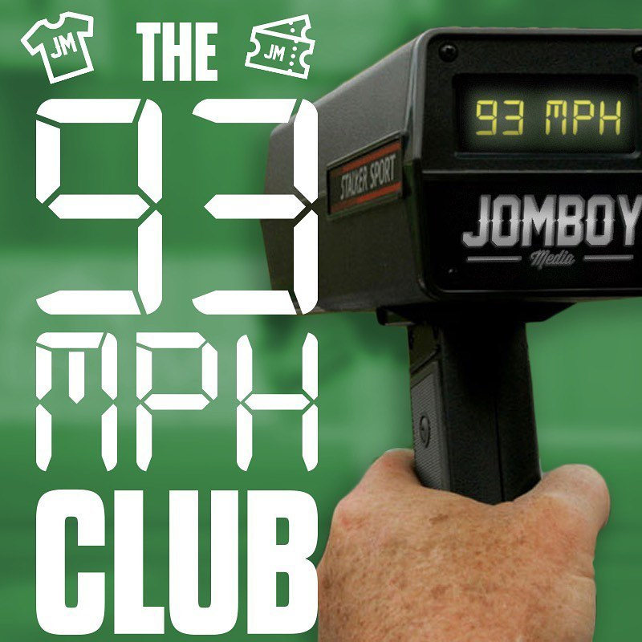
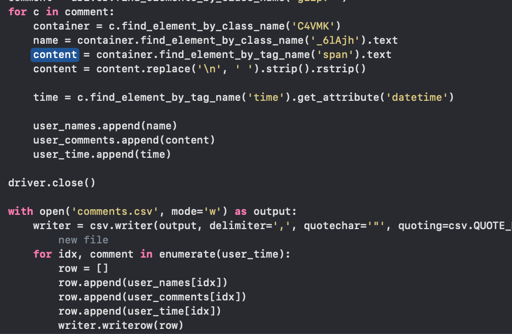
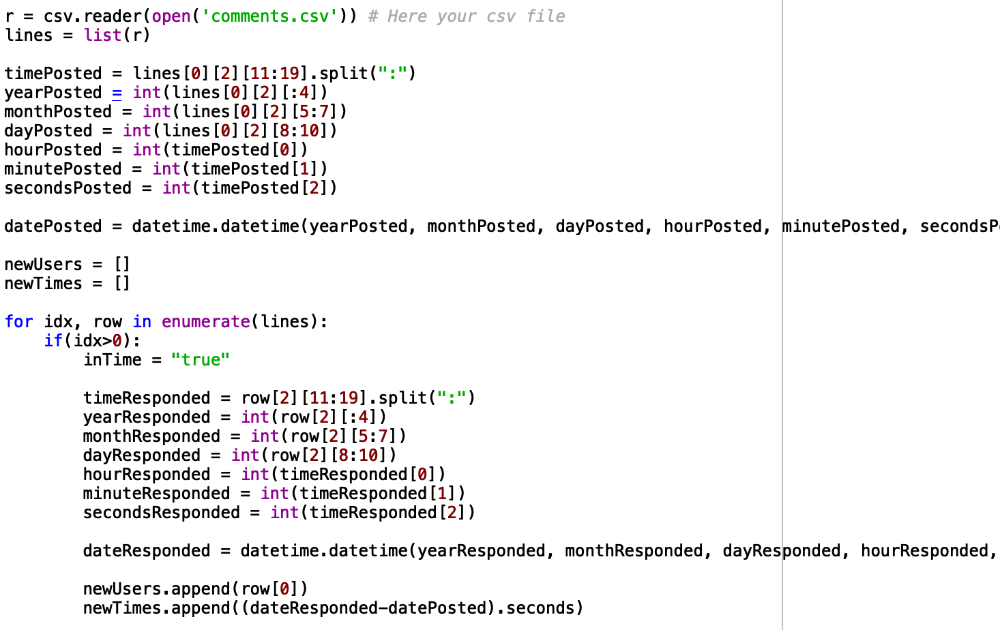
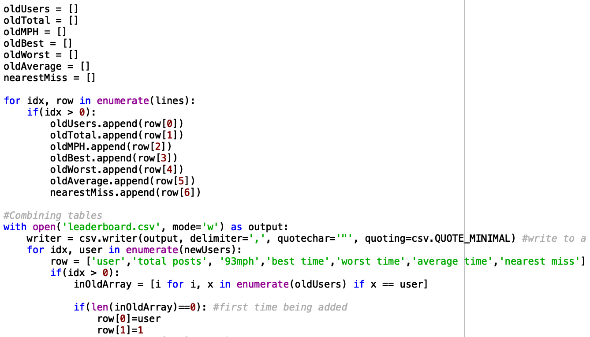

93 MPH Club Scoreboard
The 93 MPH Club is Jomboy Media's competition they run weekly on Instagram. If you respond to one of their posts within the
first 93 seconds, you get an entry into their weekly giveaway. Using a Web Scraper to scrape data from Instagram and with the help of a Python script,
below are this week's statistics for the 93 MPH Club

Update: Currently,
Web Scraping Script
Using Python with the help of selenium, pandas, xlrd and openpyxl, I wrote a script that goes to a specified Instagram post in a Chrome browser and expands the comments as far as it can. From the post, video or IGTV, it gathers the poster's name, comment and time posted for each comment by searching through the HTML. All of this data is stored in a CSV


Data Gathering Script
I created another Python script for gathering the data together from multiple CSVs. Instagram timestamps are stored in a special format called ISO 8601 time. Because this format is difficult to work with, I convert them into a more managable timestamp. Using the datetime python library, I split up each timestamp into second, minute, hour, day, etc. and made it into a datetime object. I did the same for the original timestamp Jomboy Media made the post. Then, I subtract the commenter's datetime from Jomboy Media's datetime to get the difference in seconds between the response and the post. If it's 93 seconds or less, then it qualifies for the 93 MPH Club.

Now that I have the unique usernames for the new post, I read in the CSV that contains the previous data from all other posts. Again, I check for overlap, this time between usernames in the new and old tables. If there is any overlap, then I want to combine the data. If not, then it gets added as a new row. If there is a user from the full table that isn't in the new post table, then it gets copied over directly into the new full table.
The data I track includes the username, the total amount of posts they have, how many times they posted within the first 93 seconds, their best response time, their worst response time, their average response time and the nearest miss they had from posting within 93 seconds.
Unfortunately, I only noticed after running the scripts on all of Jomboy Media's posts from last week that not all IGTV comments display in the web browser.